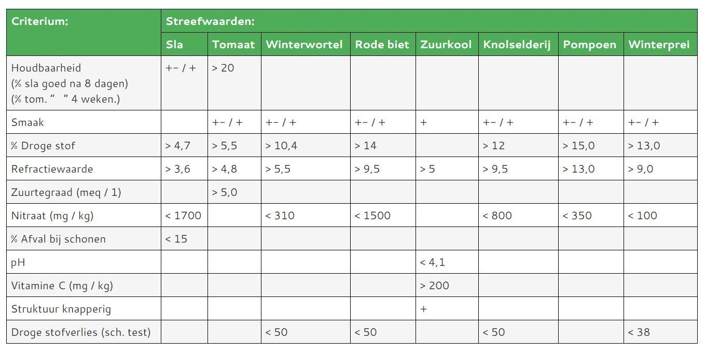
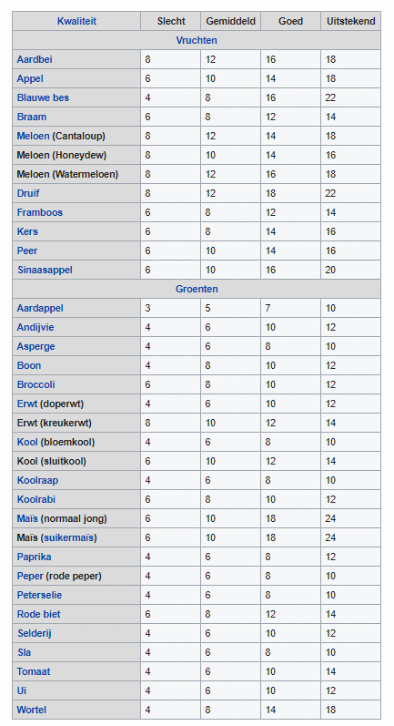

Meer over kwaliteit
Meer over kwaliteit
###
Meer over kwaliteit
Hier vindt u globale streefwaarden voor de kwaliteit van landbouwproducten. Literatuur die in dit deel van de website is gebruikt, visie op kwaliteitsbeoordeling en binnenkort nog veel meer.### inhoud
StreefwaardenWat is voedingswaardeGeschiedenis kwaliteitsbeoordelingLiteratuur ### Streefwaarden
Aan de hand van onderzoek op proefvelden en aan de hand van onderzoek aan zeer veel producten gedurende vele jaren zijn door het Louis Bolk Instituut streefwaarden ontwikkeld bij een aantal producten. Dit zijn indicatieve waarden. Bij nader onderzoek zal waarschijnlijk blijken dat ze per ras nog verschillend moeten zijn. Nader onderzoek, ook bij andere producten is dus van belang.
Bij kwaliteit gaat het om de dynamiek tussen groei en afrijping. Die is alleen bij de gewasontwikkeling goed te volgen. Toch zijn er wel indicatoren die op groei, afrijping of juist de dynamiek tussen beide aangeven. Veel nitraat duidt op groei, suiker en droge stof op rijping. Smaak en houdbaarheid en weerstand tegen zelfontbinding op een evenwichtige dynamiek tussen beide. Door het Louis Bolk Instituut zijn globale streefwaarden ontwikkeld die op een goede kwaliteit wijzen (Bokhorst, 1986).

.
Streefwaaarden voor Brix voor diverse vruchten en groenten (Wikipedia, 2021)

Wat is voedingswaarde
De behandeling van het thema voedingswaarde, voedingskwaliteit, richt zich vooral op planten. Veel studies waar naar verwezen wordt zijn uitgevoerd door onderzoekers die zich intensief met planten hebben bezig gehouden. Vanuit de plant wordt gedacht en niet of minder vanuit theorieën over planten. Het is goed om te beseffen wat dat inhoudt. Bij het omgaan met planten staat dus de plant centraal en wordt geprobeerd deze naar zijn eigen aard te begrijpen. Wat betekent dat? Op zich is het helemaal niet zo moeilijk om hier achter te komen. Wat zou kunnen is het volgende te doen of proberen innerlijk te voltrekken.– Je legt een zaadje in de grond en gaat bijvoorbeeld om de twee weken er even naar kijken.– Je maakt iedere keer een eenvoudig schetsje of een korte beschrijving van de plant.– Wanneer je opnieuw gaat kijken weet je goed hoe plant er vorige keer uitzag.– Voordat je de plant opnieuw gaat bekijken vraag je je eerst even af wat voor weer het was in de afgelopen twee weken en misschien durf je ook in te schatten hoe de plant er uit zal zien als je hem strak weer ziet.– Wanneer je de plant opnieuw ziet zul je zien dat deze verandert is. Er is dus een kracht werkzaam. Die kracht kun je levenskracht noemen. Je ervaart dus levenskrachten.Je zult ook zien dat de plant heel anders reageert op het weer dan je dat zelf doet. Je ervaart direct dat planten heel anders zijn dan mensen.Door dit te doen, of te proberen het na te volgen, krijg je een echte verhouding tot planten. Dit is een basis voor begrip van wat voedingskwaliteit is.
Het principe achter voedingskwaliteitWat is nu het principe achter voedingskwaliteit? Kijken naar het verschil tussen een wilde plant en een cultuurplant geeft hier inzicht in.

Wilde sla.
Wilde sla kiemt, vorm blad en gaat al snel schieten. Dat wil zeggen bloemknoppen, bloemen en zaad vormen. De plant uis eigenleijk heel sterk gericht op zaadvorming.

Cultuursla
Wat de wilde sla niet heeft kent de kropsla wel. De wilde plant heeft twee fasen: bladvorming en bloei en zaadvorming. De kro heeft beide eigenschappen. De krop heeft volume, maar ook kwalitatieve eigenschappen die meer bij de bleom horen: smaak en geur.
Wanneer de teler te weinig bemest wordt er geen krop gevormd en groeit de plant als wilde sla. Bij teveel mest wordt er veel blad gevormd, bij het schieten wordt dit blad vaak door schimmels aangetast en de plant komt vaak niet tot bloei en zaadvorming.Het is de taak van de teler om goed te weten wat bij een plant past en de teeltmaatregelen zo te kiezen dat de plant zich naar zijn eigen aard kan ontwikkelen. Dan krijgt de plant voedingswaarde. ### Geschiedenis kwaliteitsbeoordeling
Planten analyseren om de voedingskwaliteit te beoordelen heeft in de biologisch-dynamische landbouw veel aandacht. Initiatiefnemers waren Manfred Klett en Johannes Klein. Zij grepen in het midden van de 20e eeuw terug op het werk van Schuphan. Shuphan (1976) had relaties gevonden tussen de stikstofbemesting en de samenstelling van planten. Meer stikstof geeft minder droge stof, minder suiker, minder voor de mens goede aminozuren in eiwitten, meer nitraat, meer vrije aminozuren, meer ruw eiwit en minder zuiver eiwit. Klett deed in dit verband onderzoek naar de invloed van licht en schaduw op planten; Klein naar de invloed van organische en minerale bemesting. Op het Institut fur Biologisch-dynamische Forschung in Darmstadt (DE) zijn Eckard von Wistinghausen en Erhard Breda verder gegaan met inzicht in de facturen die invloed op kwaliteit hebben. De veearts Wolfgang Schaumann heeft veel werk samengevat. In Zweden werkte Petterson aan sapverkleuringen en geleidbaarheidsveranderingen bij bewaring van plantenextracten.
Ondertussen was in Dornach (CH) onder leiding van Jochen Bockemuhl een groep bezig met de ontwikkeling van een methode waarbij de gewasontwikkeling centraal staat bij de beoordeling. Op het Louis Bolk Instituut in Driebergen is van 1978 tot 1985 gewerkt aan een verbinding tussen beide benaderingswijzen. Op deze website is veel van dit werk te vinden. Later is op het Louis Bolk Instituut verder gewerkt aan het thema groei, afrijping (differentiatie) en de wisselwerking tussen beide (integratie).
De afgelopen decennia had de aandacht voor voedingswaarde van landbouwproducten wisselende aandacht. De laatste jaren wordt de vraag naar meer helderheid rond de gezondheidsclaims van het biologische product sterker. Een van de ontwikkelingen is het werk aan stijgbeelden en kristallisaties. Ehrenfried Pfeiffer is de grondlegger van deze methoden. Al sinds de 30-er jaren van de vorige eeuw wordt er aan gewerkt. In Nederland zijn er nu twee initiatieven: stijgbeeld.nl en crystal-lab.nl. ### literatuur
Andeweg, H.A.C. en J.G. Bokhorst, 1986. Inventariserend onderzoek vaan de teelt en kwaliteit van biologisch-dynamische kastomaten, 1985. Louis Bolk Instituut, Driebergen.
Andeweg, H.A.C., 1987. Inventariserend onderzoek vaan de teelt en kwaliteit van biologisch-dynamische kastomaten, 1986. Louis Bolk Instituut, Driebergen.
Behrendt, U., 1983. Ein Vergleich der Wild- und Kulturform des Salates. Elemente der Naturwissenschaft 39.
Beekman, J. 1999. De verdere ontwikkeling van de zelfontbindingstest. Louis Bolk Instituut, Driebergen.
Bisterbosch, L. 1994. Een experimentele aanzet tot het ontwikkelen van inzicht in de voedingskundige betekenis van het gebruik van spuitpreparaten. Louis Bolk Instituut, Driebergen.
Bloksma, J., J.M. Northolt, M. Huber, P.J. Jansonius and M. Zanen, 2004. Parameters for aplle quality. LBI GVVO4/FQH03
Bockemühl, J. 1964. Der Typus als Bewegungsgestalt. Elemente der Naturwissenschaft Heft 1.
Bockemühl, J., 1982. Levenssamenhangen in de natuur. Wilde en gekweekte planten. Bolk Instituut Driebergen.
Bockemühl, J., 1983. Vergleiche zwischen Wild- und Kulturformen zur Verständniss der Nahrungspflanze und zum finden einer Zielrichtung für Züchtung. Elemente der Naturwissenschaft 39.
Bodo, G., 1960. Über die zusammensetzung des Weizeneiweiszes bei verschiedenen höhen N-Gaben. Qualitas Plantarum en Materiae Vegetables 3, p337-354.
Bokhorst, J.G. 1978. Kwaliteitsonderzoek aan sla en winterpeen. In: Kwaliteitsonderzoek biologisch-dynamische producten 1978. Louis Bolk Instituut.
Bokhorst, J.G., 1983. Kwaliteitsonderzoek biologisch-dynamische producten, akkerbouw, tuinbouw. Louis Bolk Instituut, Driebergen.
Bokhorst, J.G., 1984. Kwaliteitsonderzoek biologisch-dynamische producten, akkerbouw en tuinbouw. Louis Bolk Instituut, Driebergen.
Bokhorst, J.G., 1985. Kwaliteitsonderzoek biologisch-dynamische producten, akkerbouw, tuinbouw, fruit. Louis Bolk Instituut, Driebergen.
Bokhorst, J.G., 1986. Kwaliteitsonderzoek biologisch-dynamische producten, akkerbouw en tuinbouw. Louis Bolk Instituut, Driebergen.
Bokhorst, J.G., 1989. Overbemesting bij winterprei. Louis Bolk Instituut, Driebergen.
Bokhorst, J.G. 1989. De invloed van samenstelling en komposteringsduur op de opbrengst en kwaliteit van rode biet, winterwortel, wite kool end e bodem. Louis Bolk Instituut Driebergen.
Bokhorst, N., 1978. Onderzoek stijgbeelden kropsla. In: Kwaliteitsonderzoek biologisch-dynamische producten 1978. Louis Bolk Instituut.
Bloksma, J. en M. Huber, 2002, Groei en differentiatie. Louis Bolk Instituut, Driebergen.
Bruinsma, M., L. Bisterbosch en R, Hendriks, 2001. De fenomenologie van sla, Ontwikkelcentrum, Ede.
Engelen, C., 2003. Zaadteelt van ui, kool en peen. Een praktische gids. Louis Bolk Instituut, Driebergen.
Engqvist, M. 1977. Die Steigbildmethode. Uitg. Vittorio Klosterman. Frankfurt am M.
Essink, P en P. Doesburg, 2016. Barstensvol leven. Christofoor, Zeist.
Gӧbel, T., 1969. Beitrag zum Begriff der Qualität. Elemente der Naturwissenschaft 11
Groenen, R., 2016. Reproductiestroom en voedingsstroom. Dynamisch perspectief 4, p 27.
Janmaat. L., 1982. Fenomenologie en kwaliteitsonderzoek. Stageverslag Louis Bolk Instituut.
Lammerts van Bueren, E.T., O. van der Kreek, A. Huidekoper & J. Robbers, 1990. Kwaliteitsbeoordeling van knolselderij in relatie tot bedrijfsindividualiteit. Deels 2: Onderzoek op de biologisch-dynamische bedrijven ‘De Plaats’ (Friesland) en ‘De Terp’ (Betuwe). Louis Bolk Instituut, Driebergen.
Mansz, H. und F., 1989. Weniger Nitrat in Wurzelgemuse. Bioloand 3, p.11, 12.
Northolt, M., G.J. van der Burgt, T. Buisman en A. Vanden Bogaerde, 2004. Parameters for carrot quality. LBI GVVO5/FQH04.
Nuijten, 2016. Gevraagd: meer biodiversiteit op veld en bord. Ekoland 10 p. 26, 27
NRLO, 1983a. Kwaliteitsonderzoek aan alternatief en gangbaar voortgebrachte producten. Deelrapport winterwortelen. Resultaten van het indicatief onderzoek 1981-1982. Den Haag.
NRLO, 1983b. Kwaliteitsonderzoek aan alternatief en gangbaar voortgebrachte producten. Deelrapport tarwe. Resultaten van het indicatief onderzoek 1981-1982. Den Haag.
NRLO, 1983c. Kwaliteitsonderzoek aan alternatief en gangbaar voortgebrachte producten. Resultaten van het indicatief onderzoek 1981-1982 aan melk, tarwe en winterwortelen.
NRLO, 1990. Kwaliteitsonderzoek aan producten van het proefbedrijf OBS. Winterwortelen 1984-1986. Rapport 90/27.NRLO, 1992. Kwaliteitsonderzoek aan aaradppelen van het proefbedrijf OBS 1987-1988. Rapport 91/8.
Projectgroep tarwe, 1983. Een studie naar samenhangen tussen bodem, voorvrucht, gasontwikkeling en bakproces. Scriptie Landbouwhogeschool Wageningen.
Rozumek, M. 2004. Eine Frage der Erkenntnishaltung. Mӧglichkeiten und Grenzen der bildschaffende Methoden. Dar Goetheanum, nr 21.
Samaras, J..gedüngter Gemüsearten, Diss. Bonn. Repr. Darmstadt, Germany: Verlag Leb. Erde.
Schouten, S.P., 1983. Bewaar en sensorische kwaliteit van gangbaar en alternatief geteelde winterwortelen. Sprenger Instituut, Wageningen.
Schuphan, W. 1976. Mensch und Nahrungspflanze. Der biologische Wert der Nahrungspflanze in Abhängigkeit von Pestizideinsatz, Bodenqualität und Düngung. Dr. W. Junk B.V.-Verlag, Den Haag.
Schwencke, Y., P. van der Vet en J.D. van Mansvelt, 1978. Orienterend onderzoek naar de ontwikkelingsmorfologie van de suikerbiet. Louis Bolk Instituut.
Verkerke, W,. 2007. Claims rond gezondheid en smaak van biologische producten: protocol “in house” smaakpanels op AGF bedrijven – kansen voor biologische AGF producten met specifieke inhoudstoffen. PPO nr. 3242005600.
Visser, M., A. de Vries en J.G. Bokhorst, 1979. Springstaarten en bodemvruchtbaarheid. Bolk Instituut, Driebergen.